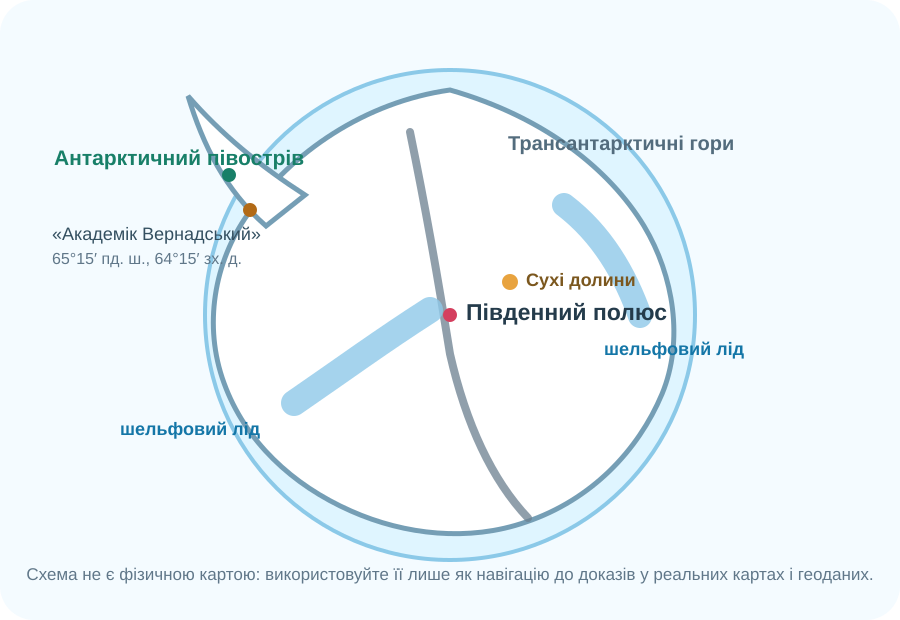

1. Ідентифікація учня
Робота заблокована до заповнення всіх трьох полів.
2. Карта доказів

Порада: схема — лише навігатор. Перевіряйте просторові твердження на реальній карті або у геоданих.
3. Результат і маршрут корекції
0/10
ГР1 • карта й просторове мислення
ГР2 • природні процеси
ГР3 • людина, наука й охорона
Що повторити далі
Для корекції використайте реальну карту, BAS Bedmap, NASA Worldview та сторінку НАНЦ про станцію «Академік Вернадський».